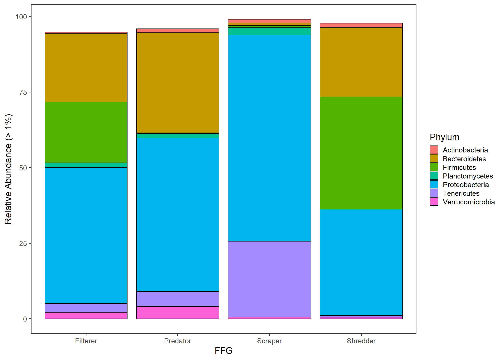
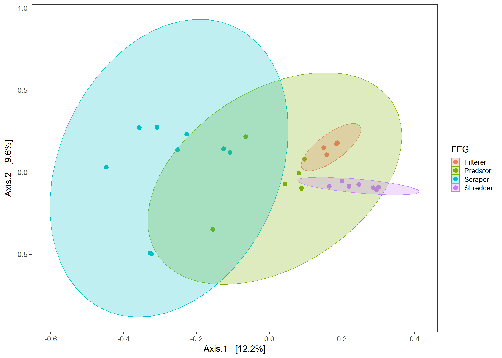
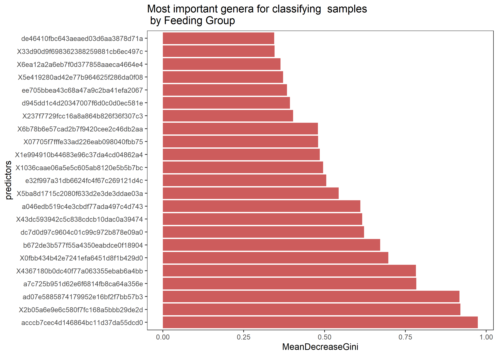

Italy Stream Microbiome Workshop
SKaszubinski & JReceveur
Getting Started
These example materials were developed for the Bridging Ecology and Applications Through High Throughput Sequencing Technology Workshop (14 March 2019) using data from a ongoing project investigating the microbial communities associated with stream macroinvertebrates in the Po River. For contact information and questions see our lab webpage or Github site.
Install Packages
The first step is to install and load the packages you will need. The package phyloseq is a widely used package for analyzing microbial data and has a number of excellent tutorials if you would like more information. The other packages contain more general functions such as statistical testing and plotting that we will use as well.
install.packages(c("vegan","ggplot2","RCurl","plyr","dplyr"))
source('http://bioconductor.org/biocLite.R')
biocLite('phyloseq')Loading packages
After the packages are installed, they will have to be loaded each time you start a new R session. You will most likely see several messages when you run the code below but as long as there are not any errors you can move on to the next steps.
library(vegan)
library(ggplot2)
library(phyloseq)
library(RCurl)
library(plyr)
library(dplyr)Data Import
To download and import the data into R, the lines below will download the sample information.
x<-getURL("https://raw.githubusercontent.com/BenbowLab/BenbowLab.github.io/master/ItalyStreamMicrobiomeMetadata.csv")
metadata<-read.csv(text= x,header=T)
head(metadata) # To see the variables in the metadata fileThe file containing the sequencing information is too large to directly download into R from Github (1,026 KB). You will have to open a browser to download the data. The first line below will take you to the page with the data. You will see a download button, click that.
After the file is downloaded, run the next line to import the data into R. This command will open a window where you will navigate to the file and click open to select the file and load it into R.
browseURL("https://github.com/BenbowLab/BenbowLab.github.io/blob/master/ItalyInvert2018WTax.biom")
biom<-import_biom(file.choose(),parseFunction= parse_taxonomy_greengenes) The next section of code will combine together the metadata and sequencing data into a single object in R. The rarifying step accounts for differing numbers of sequencing reads per samples by randomly choosing reads up to the chosen value.
sampdat=sample_data(metadata)
sample_names(sampdat)=metadata$id
CombinedData=merge_phyloseq(biom,sampdat)
CombinedData=rarefy_even_depth(CombinedData, 3000, replace = TRUE, trimOTUs = TRUE, verbose = TRUE,rngseed = TRUE)## `set.seed(TRUE)` was used to initialize repeatable random subsampling.## Please record this for your records so others can reproduce.## Try `set.seed(TRUE); .Random.seed` for the full vector## ...## 550OTUs were removed because they are no longer
## present in any sample after random subsampling## ...Data overview
Sampling and methodologies:
The data that we will be are the internal microbiome of aquatic insects from different functional feeding groups at two locations with different riparian conditions (Forest vs Alpine Prairie).

Locations of sample sites within the Upper Po river
A) Alpine Prairie (Pian della Regina) B) Forested site (Ostana)
The data consist of an Operational Taxonomic Unit (OTU) table, sample data, and taxonomy table. The OTU table contains the number of sequence variants. The taxonomy table includes the taxonomy information for each sequence variant, from Kingdom down to Genus. The sample data contains metadata for the study.
CombinedData## phyloseq-class experiment-level object
## otu_table() OTU Table: [ 2396 taxa and 26 samples ]
## sample_data() Sample Data: [ 26 samples by 8 sample variables ]
## tax_table() Taxonomy Table: [ 2396 taxa by 14 taxonomic ranks ]These are the most abundant taxon by functional feeding group and sampling station.
## Sampling_station FFG Taxon_name N meanWeight sd
## 4 Ostana Shredder Tipula_(Acutitipula) 3 534.9333 425.43289
## 2 Ostana Predator Perla 2 190.5000 174.51395
## 7 PDR Shredder Tipula_(Acutitipula) 4 87.7000 42.81799
## 5 PDR Predator Dictyogenus 4 83.9500 16.27073
## 1 Ostana Filterer Hydropsyche 4 41.4500 33.70762
## se
## 4 245.623793
## 2 123.400000
## 7 21.408993
## 5 8.135365
## 1 16.853808Taxonomic Composition
The next section of code filters out bacterial taxa that occured at a low abundance and makes additional files where the samples are group together at different levels (Phylum, Family, Genus).
GPr = transform_sample_counts(CombinedData, function(x) x / sum(x) ) #transform samples based on relative abundance
GPr = filter_taxa(GPr, function(x) mean(x) > 1e-5, TRUE)
PhylumAll=tax_glom(GPr, "Phylum")# Group samples at the phylum level
PhylumLevel = filter_taxa(PhylumAll, function(x) mean(x) > 1e-2, TRUE) #filter out any taxa lower tha 1%
FamilyAll=tax_glom(GPr,"Family")
FamilyLevel = filter_taxa(FamilyAll, function(x) mean(x) > 2e-2, TRUE) #filter out any taxa lower tha 1%
GenusAll=tax_glom(GPr,"Genus")
GenusLevel = filter_taxa(GenusAll, function(x) mean(x) > 2e-2, TRUE) #filter out any taxa lower tha 1%The next section of code summarizes the phylum level relative abundance by a variable, in this case Functional feeding group, which we will use to plot the data.
df <- psmelt(PhylumLevel)
df$Abundance=df$Abundance*100
Trtdata <- ddply(df, c("Phylum", "FFG"), summarise, #To look at other variables change "FFG", to look at other taxanomic levels change Phylum and use the coorosponding file (e.g. FamilyLevel)
N = length(Abundance),
mean = mean(Abundance),
sd = sd(Abundance),
se = sd / sqrt(N)
)
head(Trtdata)## Phylum FFG N mean sd se
## 1 Actinobacteria Filterer 4 0.3333333 0.294392 0.1471960
## 2 Actinobacteria Predator 6 1.3055556 0.383792 0.1566824
## 3 Actinobacteria Scraper 9 1.1592593 1.198932 0.3996440
## 4 Actinobacteria Shredder 7 1.3523810 1.597319 0.6037299
## 5 Bacteroidetes Filterer 4 22.6500000 4.296812 2.1484060
## 6 Bacteroidetes Predator 6 32.7777778 10.057936 4.1061351Plotting phylum level relative bacterial abundance
The next section of code will take the summarized data from above and plot the relative abundance by FFG at the phylum level.
PhylumLevelPlot=ggplot(Trtdata, aes(x=FFG,y=mean))+geom_bar(aes(fill = Phylum),colour="black", stat="identity")+xlab("FFG")+ylab("Relative Abundance (> 1%)")
PhylumLevelPlot
Comparing Alpha diversity between sample groups
Shannon and Faith’s Phylogenetic diversity have already been calculated for each sample and are already in the metadata file.
Faith’s diversity takes into account richness, evenness, as well as the phylogenetic difference between samples. Bacterial species which are further apart on a phylogenetic tree are weighted differently than samples which are closer together.
ggplot(metadata,aes(x=FFG,y=shannon,fill=FFG))+ geom_boxplot()ggplot(metadata,aes(x=FFG,y=faith_pd,fill=FFG))+ geom_boxplot()Splitting samples by site
Below is an example of how you would subset the data by site. For example, if you were interested in looking at the differences in alpha diversity between the bacterial communities only at the forested site.
OstanaMetadata<-subset(metadata, Sampling_station == "Ostana")#If you wanted to look at a different variable (e.g. shredders from both locations you would change the code to FFG == "Shredders")
ggplot(OstanaMetadata,aes(x=FFG,y=shannon,fill=FFG))+ geom_boxplot()+ylab("Shannon Diversity Ostana")Beta diversity
In addition to alpha diversity, we are also interested in looking at the differences in beta diversity between sample groups. To visualize differences in beta diversity, the code below uses PCoA plots with ovals repersenting the 95% confidence intervals for the mean of each group.
While this example uses jaccard distance, there are a number of other distance methods which can be used depending on the situation.
ord=ordinate(CombinedData,"PCoA", "jaccard") #To use a differetn metric change "jaccard" to the desired metric. For example "wunifrac" or "bray"
ordplot=plot_ordination(CombinedData, ord,"samples", color="FFG")+geom_point(size=4)
ordplot+ stat_ellipse(type= "norm",geom = "polygon", alpha = 1/4, aes(fill = FFG))
#If you were only interested in looking within a single location you could use the code Ostana<-subset_samples(physeq,Sampling_site =="Ostana")Questions for further understanding
What happens if you choose a different level to filter out low abundance bacteria before plotting? (e.g. PhylumLevel = filter_taxa(PhylumAll, function(x) mean(x) > 1e-4, TRUE))
How would you change the code above to plot the family level relative abundance rather than the phylum level?
Do the two locations show the same pattern in alpha diversity by functional feeding group? (Seperate the two locations and plot them both individually)
How does using a different distance metric change the beta diversity plots? (e.g chance “jaccard” to “bray”, “gower”)
Other functions
Random Forest
Random forest is a modeling technique which uses machine learning to identify important predictors for groups of samples. It also tests how well the model it creates is able to classify samples based on the data and the variable chosen.
#install.packages("randomForest")
#install.packages("knitr")
library(knitr)
library(randomForest)## randomForest 4.6-14## Type rfNews() to see new features/changes/bug fixes.##
## Attaching package: 'randomForest'## The following object is masked from 'package:dplyr':
##
## combine## The following object is masked from 'package:ggplot2':
##
## marginForestData=GenusAll#Change this one so you dont have to rewrite all variables
predictors=t(otu_table(ForestData))
response <- as.factor(sample_data(ForestData)$FFG)
rf.data <- data.frame(response, predictors)
FeedingGroupForest <- randomForest(response~., data = rf.data, ntree = 1000)
print(FeedingGroupForest)#returns overall Random Forest results##
## Call:
## randomForest(formula = response ~ ., data = rf.data, ntree = 1000)
## Type of random forest: classification
## Number of trees: 1000
## No. of variables tried at each split: 13
##
## OOB estimate of error rate: 7.69%
## Confusion matrix:
## Filterer Predator Scraper Shredder class.error
## Filterer 2 1 0 1 0.5
## Predator 0 6 0 0 0.0
## Scraper 0 0 9 0 0.0
## Shredder 0 0 0 7 0.0imp <- importance(FeedingGroupForest)#all the steps that are imp or imp. are building a dataframe that contains info about the taxa used by the Random Forest testto classify treatment
imp <- data.frame(predictors = rownames(imp), imp)
imp.sort <- arrange(imp, desc(MeanDecreaseGini))
imp.sort$predictors <- factor(imp.sort$predictors, levels = imp.sort$predictors)
imp.20 <- imp.sort[1:23, ]#22
ggplot(imp.20, aes(x = predictors, y = MeanDecreaseGini)) +
geom_bar(stat = "identity", fill = "indianred") +
coord_flip() +
ggtitle("Most important genera for classifying samples\n by Feeding Group")#\n in a string tells it to start a new line
#imp.20$MeanDecreaseGini
otunames <- imp.20$predictors
r <- rownames(tax_table(ForestData)) %in% otunames
otunames## [1] e32f997a31db6624fc4f67c269121d4c X2b05a6e9e6c580f7fc168a5bbb29de2d
## [3] acccb7cec4d146864bc11d37da55dcd0 ad07e5885874179952e16bf2f7bb57b3
## [5] X43dc593942c5c838cdcb10dac0a39474 b672de3b577f55a4350eabdce0f18904
## [7] dc7d0d97c9604c01c99c972b878e09a0 a42594aa39e8c4b1efb497c275e791ba
## [9] a7c725b951d62e6f6814fb8ca64a356e a046edb519c4e3cbdf77ada497c4d743
## [11] X0fbb434b42e7241efa6451d8f1b429d0 X6b78b6e57cad2b7f9420cee2c46db2aa
## [13] X773e5b14f70020c477e1302bcdc8289b ef53cef3b90f7b7b0189b52eaf440bfd
## [15] X1036caae06a5e5c605ab8120e5b5b7bc edb114398ced5bf958f4f404493a6642
## [17] X1e994910b44683e96c37da4cd04862a4 X07705f7fffe33ad226eab098040fbb75
## [19] X5e419280ad42e77b964625f286da0f08 c22b16cc6108c04f29fea3b6d4c81571
## [21] ee705bbea43c68a47a9c2ba41efa2067 de46410fbc643aeaed03d6aa3878d71a
## [23] X7403bfa23d688a94b469051d9f13ae5f
## 170 Levels: e32f997a31db6624fc4f67c269121d4c ...PredictorTable<-kable(tax_table(ForestData)[r, ])#returns a list of the most important predictors for Random Forest Classification
PredictorTable| Kingdom | Phylum | Class | Order | Family | Genus | Species | Rank5 | Rank6 | Rank7 | Rank4 | Rank2 | Rank3 | Rank1 | |
|---|---|---|---|---|---|---|---|---|---|---|---|---|---|---|
| e32f997a31db6624fc4f67c269121d4c | Bacteria | Bacteroidetes | Cytophagia | Cytophagales | Cytophagaceae | Leadbetterella | NA | NA | NA | NA | NA | NA | NA | NA |
| a42594aa39e8c4b1efb497c275e791ba | Bacteria | Deferribacteres | Deferribacteres | Deferribacterales | Deferribacteraceae | Mucispirillum | NA | NA | NA | NA | NA | NA | NA | NA |
| ef53cef3b90f7b7b0189b52eaf440bfd | Bacteria | Bacteroidetes | Cytophagia | Cytophagales | Cytophagaceae | Runella | NA | NA | NA | NA | NA | NA | NA | NA |
| ee705bbea43c68a47a9c2ba41efa2067 | Bacteria | Armatimonadetes | Armatimonadia | Armatimonadales | Armatimonadaceae | Armatimonas | NA | NA | NA | NA | NA | NA | NA | NA |
| de46410fbc643aeaed03d6aa3878d71a | Bacteria | Verrucomicrobia | Verrucomicrobiae | Verrucomicrobiales | Verrucomicrobiaceae | Luteolibacter | NA | NA | NA | NA | NA | NA | NA | NA |
| dc7d0d97c9604c01c99c972b878e09a0 | Bacteria | Firmicutes | Clostridia | Clostridiales | Ruminococcaceae | Ruminococcus | NA | NA | NA | NA | NA | NA | NA | NA |
| a046edb519c4e3cbdf77ada497c4d743 | Bacteria | Proteobacteria | Betaproteobacteria | Burkholderiales | Comamonadaceae | Rhodoferax | NA | NA | NA | NA | NA | NA | NA | NA |
| b672de3b577f55a4350eabdce0f18904 | Bacteria | Proteobacteria | Gammaproteobacteria | Pseudomonadales | Moraxellaceae | Perlucidibaca | NA | NA | NA | NA | NA | NA | NA | NA |
| acccb7cec4d146864bc11d37da55dcd0 | Bacteria | Proteobacteria | Betaproteobacteria | Methylophilales | Methylophilaceae | Methylotenera | NA | NA | NA | NA | NA | NA | NA | NA |
| a7c725b951d62e6f6814fb8ca64a356e | Bacteria | Firmicutes | Clostridia | Clostridiales | Lachnospiraceae | Clostridium | NA | NA | NA | NA | NA | NA | NA | NA |
| ad07e5885874179952e16bf2f7bb57b3 | Bacteria | Bacteroidetes | Cytophagia | Cytophagales | Cytophagaceae | Emticicia | NA | NA | NA | NA | NA | NA | NA | NA |
| c22b16cc6108c04f29fea3b6d4c81571 | Bacteria | Proteobacteria | Gammaproteobacteria | Pseudomonadales | Moraxellaceae | Acinetobacter | NA | NA | NA | NA | NA | NA | NA | NA |
| edb114398ced5bf958f4f404493a6642 | Bacteria | Bacteroidetes | [Saprospirae] | [Saprospirales] | Saprospiraceae | Haliscomenobacter | NA | NA | NA | NA | NA | NA | NA | NA |
| ##Statistical testing |
There are a wide variety of statistical test that can be used to compare microbiome data. Below we will show an example of comparing beta diveristy using a PERMANOVA test.
This test will test whether the variablility within groups is significantly different (Are one group of samples more similar to each other than a different group.
Variance in beta diversity
GPdist=phyloseq::distance(CombinedData, "jaccard")
beta=betadisper(GPdist, sample_data(CombinedData)$FFG)
permutest(beta)##
## Permutation test for homogeneity of multivariate dispersions
## Permutation: free
## Number of permutations: 999
##
## Response: Distances
## Df Sum Sq Mean Sq F N.Perm Pr(>F)
## Groups 3 0.045187 0.0150623 3.9473 999 0.018 *
## Residuals 22 0.083949 0.0038159
## ---
## Signif. codes: 0 '***' 0.001 '**' 0.01 '*' 0.05 '.' 0.1 ' ' 1boxplot(beta)Testing for differences in beta diversity between groups
The following test will compare whether the differences seen in the PCoA plots from above are significant, using a Permutational Analysis of Variance (PERMANOVA) test.
GPdist=phyloseq::distance(CombinedData, "jaccard")
adonis(GPdist ~ FFG*Sampling_station, as(sample_data(CombinedData), "data.frame"))##
## Call:
## adonis(formula = GPdist ~ FFG * Sampling_station, data = as(sample_data(CombinedData), "data.frame"))
##
## Permutation: free
## Number of permutations: 999
##
## Terms added sequentially (first to last)
##
## Df SumsOfSqs MeanSqs F.Model R2 Pr(>F)
## FFG 3 3.0469 1.01564 3.0303 0.26943 0.001 ***
## Sampling_station 1 0.7069 0.70691 2.1092 0.06251 0.002 **
## FFG:Sampling_station 2 1.1868 0.59342 1.7706 0.10495 0.001 ***
## Residuals 19 6.3680 0.33516 0.56311
## Total 25 11.3087 1.00000
## ---
## Signif. codes: 0 '***' 0.001 '**' 0.01 '*' 0.05 '.' 0.1 ' ' 1